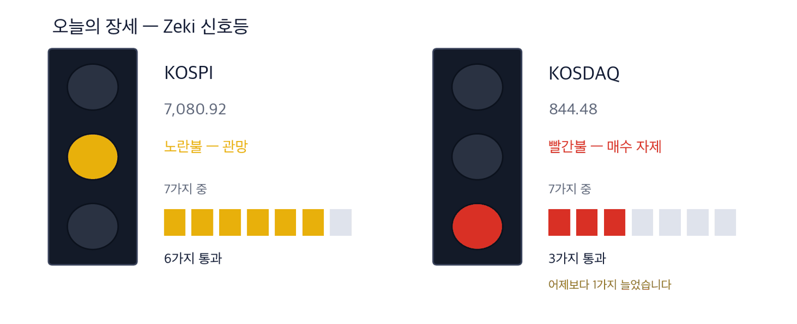

코스피 7,080.92 +0.90% | 코스닥 844.48 +1.21% | 나스닥 26,936.04 -1.13% | 제키 신호등 노란불 |

초록불은 매수 우위, 노란불은 관망, 빨간불은 매수 자제입니다. 칸은 7가지 조건 중 몇 가지를 만족하는지이고, 많을수록 오르는 종목이 넓게 퍼져 있습니다. 코스피는 7가지 가운데 6가지를 만족해 노란불이고, 코스닥은 3가지로 빨간불입니다. 코스닥은 하루 전보다 1가지 늘었습니다.
대기 — 신호등이 뜻하는 자세입니다.
23일 코스피는 0.90% 올라 7,080.92로 마쳤습니다. 4거래일 연속 올라 7월 23일 이후 두 달 만에 가장 높습니다. 개인은 이날 1조원 가까이 팔았고, 나흘 동안 판 금액이 10조원을 넘었습니다. (매일경제 9/24자) 한국 증시는 추석 연휴로 24일과 25일 쉬고 28일 다시 엽니다.
간밤 뉴욕에서 나스닥지수는 1.13% 내려 26,936.04로 마쳤습니다. 경기 지표가 강하게 나오자 미국 10년물 국채 금리가 5.12%로 올라 2007년 7월 이후 가장 높아졌습니다. S&P 500 업종 가운데 오른 곳은 에너지 하나였고, 서부텍사스산원유(WTI)는 2% 넘게 올라 배럴당 92달러대입니다. (IBD 9/23) 이 결과는 연휴가 끝난 28일 서울 개장 때 값에 반영됩니다.
① 미국이 경유 수출을 막으면 아시아 정유사가 그 자리를 채웁니다. 트럼프 대통령이 경유 수출 금지를 검토한다고 밝혔습니다. 공급 부족 우려에 아시아 경유 마진은 9월 셋째 주 한 주 새 10달러 올라 배럴당 60.4달러가 됐습니다. (한국경제 9/24자) S-Oil은 매출의 31.6%가 경유이고, 근거의 무게는 「근거 확실」입니다.
② 전선주 가운데 가온전선만 이달 들어 22일까지 53% 올랐습니다. 미국 법인을 통해 빅테크 5곳 안팎과 최대 5조5,000억원어치 장기 공급 계약을 맺었습니다. 제키 강도는 99이고, 같은 기간 대한전선·일진전기는 한 자릿수 상승에 그쳤습니다.
③ 태양광 종목은 하루 급등했지만 추세는 아직 아래쪽입니다. OCI홀딩스는 23일 9.57%, 한화솔루션은 6.38% 올랐습니다. 두 종목 모두 이달 들어 크게 내린 뒤의 반등이고, 추세 지표가 0 아래여서 종목 카드로 만들지 않았습니다.
경제협력개발기구(OECD)는 올해 한국 성장률 전망을 2.6%에서 3.7%로 올렸습니다. 주요 20개국 가운데 가장 큰 폭입니다. (매일경제·한국경제 9/24자)
| 날짜 | 무엇을 보는가 | 시장에 어떤 영향 |
|---|---|---|
| 9월 24~25일(목·금) | 한국 증시 추석 휴장 · 뉴욕에서 미·중, 미·이란 회담 | 연휴 동안 뉴욕에서 생긴 일이 28일 한꺼번에 반영됩니다 |
| 9월 28일(월) | 연휴 뒤 첫 거래일 | 코스피가 23일 종가 7,080.92 위에서 시작하는지를 봅니다 |
| 9월 29일(화) | 삼성전자 배당락 · 미국 8월 구인·이직 보고서 | 미국 금리가 움직이면 반도체 대형주 값이 먼저 흔들립니다 |
미국 경유 소비자 가격은 갤런당 6.53달러로 사상 최고입니다. 미국 경유 재고는 최근 5년 평균보다 약 13% 적습니다. 중간선거를 앞둔 트럼프 대통령은 수출을 막아 국내 값을 낮추는 방안을 참모진에 지시했다고 말했습니다. 베선트 재무장관도 전면·부분 금지를 모두 검토한다고 확인했습니다. (파이낸셜타임스 보도, 한국경제 9/24자 인용)
미국은 경유를 가장 많이 내다 파는 나라 가운데 하나입니다. 수출은 2월 하루 약 100만 배럴에서 8월 160만 배럴로 늘었습니다. 이 물량이 빠지면 유럽과 중남미는 다른 곳에서 경유를 사야 합니다. 한국 정유 4사 매출에서 경유는 30% 안팎입니다. 다만 정부가 경유 수출량을 전년 같은 달 수준 이하로 묶어 두어, 늘어난 수요를 다 받지는 못합니다.
9월 23일 종가 기준 저희 업종 순위에서 석유·가스 업종은 5종목 이상인 38개 업종 가운데 1위입니다. 이 업종 5종목 가운데 3종목이 제키 강도 91 이상입니다.
| 종가 | 당일 | 한 주 | 20거래일 |
|---|---|---|---|
| 155,600원 | +0.84% | +8.98% | +10.99% |
| 3개월 | 제키 강도 | 고점 대비 |
|---|---|---|
| +45.85% | 92 | -5.67% |
| 누가 | S-Oil, 울산에 정제 설비를 둔 정유사입니다. |
| 무엇을 | 상반기 매출의 31.6%가 경유였습니다. |
| 언제 | 트럼프 대통령의 발언은 22일(현지시간)이고, 23일 S-Oil은 0.84% 올라 155,600원에 마쳤습니다. |
| 어디서 | 유가증권시장에 상장돼 있습니다. 하루 거래대금은 약 646억원입니다. |
| 왜 | 미국 물량이 빠지면 아시아 정유사의 경유가 그 빈자리를 채우기 때문입니다. |
| 어떻게 | 정제마진이 오르면 같은 원유로 버는 돈이 늘고, 분기 실적에 먼저 찍힙니다. |
가온전선 주가는 9월 1일부터 22일까지 53% 올랐습니다. 같은 기간 대한전선은 7.48%, 일진전기는 7.44% 오르는 데 그쳤습니다. 차이는 미국 현장에 있습니다. 가온전선은 LS전선의 상장 자회사로, 미국 법인 LSCUS를 통해 데이터센터용 배선 설비를 공급합니다. (한경 9/24자 증권면)
미국 상무부가 구리로 만든 송전 배선 케이블에 약 25% 관세를 매길 것으로 알려졌습니다. 미국 안에서 만드는 회사가 유리해집니다. KB증권은 LSCUS의 생산능력이 2027년까지 두 배가 된다고 봤습니다.
같은 순위에서 전기장비 업종은 38개 업종 가운데 4위입니다. 이 업종 16종목 가운데 절반이 제키 강도 77 이상입니다.
| 종가 | 당일 | 한 주 | 20거래일 |
|---|---|---|---|
| 318,500원 | -0.93% | +28.74% | +87.94% |
| 3개월 | 제키 강도 | 고점 대비 |
|---|---|---|
| +83.71% | 99 | -2.45% |
| 누가 | 가온전선, 전력·통신 케이블을 만드는 LS전선 계열사입니다. |
| 무엇을 | 빅테크 5곳 안팎과 최대 5조5,000억원 규모 장기 공급 계약을 맺었습니다. |
| 언제 | 23일 0.93% 내려 318,500원에 마쳤습니다. 21일 1년 최고가를 새로 썼습니다. |
| 어디서 | 유가증권시장에 상장돼 있습니다. 하루 거래대금은 약 1,114억원입니다. |
| 왜 | 인공지능 데이터센터가 늘수록 대용량 전력을 나르는 배선이 더 필요하기 때문입니다. |
| 어떻게 | 미국 안에서 만들면 관세를 피하고, 계약 물량이 공장 증설 속도대로 매출이 됩니다. |
| 종가 | 당일 | 한 주 | 20거래일 |
|---|---|---|---|
| 81,700원 | +6.80% | +16.36% | +18.21% |
| 3개월 | 제키 강도 | 고점 대비 |
|---|---|---|
| +10.39% | 80 | -43.23% |
| 누가 | 일진전기, 전선과 변압기를 만드는 회사입니다. |
| 무엇을 | 같은 기사에서 한 자릿수 상승에 머문 회사로 거론됐습니다. |
| 언제 | 23일 6.80% 올라 81,700원에 마쳤습니다. |
| 어디서 | 유가증권시장에 상장돼 있습니다. 하루 거래대금은 약 316억원입니다. |
| 왜 | 가온전선이 앞서 가면 같은 전력망 수요를 받는 회사로 돈이 옮겨 가는지 볼 자리이기 때문입니다. |
| 어떻게 | 23일 거래량이 50일 평균의 2.96배로 늘며 올랐습니다. 이 거래가 이어지는지가 관건입니다. |
미국은 12월 4일부터 무역확장법 232조로 태양광 수입품에 최저수입가격과 관세를 매깁니다. 23일 OCI홀딩스는 9.57%, 한화솔루션은 6.38% 올랐습니다. (한경 9/24자) 그러나 두 종목은 이달 들어 각각 25.8%, 13.7% 내린 뒤의 하루 반등입니다. 추세 지표가 둘 다 0 아래이고, 한화솔루션은 제키 강도가 33입니다. 12월 시행 전에 추세가 돌아서는지 먼저 봅니다.
같은 이유로 뺀 것 하나 더 — 대한전선입니다. 같은 전선 테마이지만 추세 지표가 0 아래이고, 20거래일 동안 외국인과 기관이 함께 팔았습니다.
정유사가 인공지능 데이터센터용 냉각유 사업에 나선다는 기사도 있었습니다. (매일경제 9/24자) 그러나 세계 액침냉각 시장은 2024년 4,000억원에서 2031년 다섯 배로 커질 전망입니다. 정유사 매출에 비하면 작은 규모여서 테마 1의 근거로 쓰지 않았습니다.
| 종목 | ①20거래일 상승 | ②강도 90↑ | ③외국인 순매수 | ④기관 순매수 | 충족 | 근거의 무게 |
|---|---|---|---|---|---|---|
| S-Oil(010950) | O | O | O | O | 4/4 | 근거 확실 |
| 가온전선(000500) | O | O | O | O | 4/4 | 근거 확실 |
| 일진전기(103590) | O | X | X | O | 2/4 | 확인 필요 |
네 칸은 ①20거래일 동안 올랐는가 ②제키 강도가 90 이상인가 ③외국인이 20거래일 순매수했는가 ④기관이 20거래일 순매수했는가입니다. O의 개수가 근거의 무게를 정합니다.
수급과 거래량을 한 줄로
거래량은 최근 5거래일 평균 ÷ 50일 평균입니다. ✓ 는 저희 진입 규칙(MACD 라인 > 0)도 통과했다는 뜻이고, ✗ 는 수급은 좋지만 규칙 밖이라는 뜻입니다. 이 읽는 법이 맞는지는 지금 세고 있습니다. |
| 종목 | 20일 동안 더 산 양(주) | Zeki 강도 | 20거래일 등락 | 기준일 |
|---|---|---|---|---|
| 우리금융지주 316140 | +14,250,151 | 74 | +7.6% | 09-23 |
| 대한항공 003490 | +11,892,400 | 75 | +11.9% | 09-23 |
| SFA반도체 036540 | +10,901,924 | 94 | +86.1% | 09-23 |
| 실리콘투 257720 | +4,361,765 | 55 | -24.9% | 09-23 |
| 대한광통신 010170 | +3,969,550 | 99 | +31.3% | 09-23 |
| 종목 | 20일 동안 더 산 양(주) | Zeki 강도 | 20거래일 등락 | 기준일 |
|---|---|---|---|---|
| 넷마블 251270 | -11,297,452 | 14 | -8.0% | 09-23 |
| LG디스플레이 034220 | -10,705,676 | 10 | -10.4% | 09-23 |
| 삼성전자 005930 | -9,257,897 | 93 | +9.6% | 09-23 |
| 대우건설 047040 | -8,600,738 | 95 | -7.3% | 09-23 |
| 두산에너빌리티 034020 | -7,026,277 | 47 | -3.6% | 09-23 |
| 종목 | 20일 동안 더 산 양(주) | Zeki 강도 | 20거래일 등락 | 기준일 |
|---|---|---|---|---|
| 포스코인터내셔널 047050 | +18,601,571 | 49 | +5.7% | 09-23 |
| 삼성전자 005930 | +11,264,009 | 93 | +9.6% | 09-23 |
| 포스코DX 022100 | +9,891,409 | 18 | -3.1% | 09-23 |
| 맥쿼리인프라 088980 | +4,762,797 | 26 | +0.3% | 09-23 |
| 한화생명 088350 | +3,750,900 | 83 | +1.8% | 09-23 |
| 종목 | 20일 동안 더 산 양(주) | Zeki 강도 | 20거래일 등락 | 기준일 |
|---|---|---|---|---|
| 실리콘투 257720 | -5,535,116 | 55 | -24.9% | 09-23 |
| 고영 098460 | -2,934,302 | 70 | +1.7% | 09-23 |
| 대우건설 047040 | -2,886,486 | 95 | -7.3% | 09-23 |
| 한화솔루션 009830 | -2,864,532 | 33 | -10.6% | 09-23 |
| 우리기술 032820 | -2,538,128 | 92 | +5.2% | 09-23 |
기사와 값이 맞아도 자금은 따로 봅니다. 아래 표는 23일 거래량이 넘어야 할 거래량(50일 평균)을 실제로 넘었는지를 답합니다.
| 종목 | 넘었나 | 수급(9월 23일까지) | 어떻게 읽나 |
|---|---|---|---|
| S-Oil(010950) | 0.89배 ✗ | 외 매수 · 기 매수 | 관망 — 수급은 매수 우위지만 23일 거래가 적었습니다 |
| 가온전선(000500) | 0.57배 ✗ | 외 매수 · 기 매수 | 관망 — 수급은 매수 우위지만 23일 거래가 적었습니다 |
| 일진전기(103590) | 2.96배 ✓ | 외 매도 · 기 매수 | 주의 — 외국인과 기관이 갈립니다 |
「넘었나」는 23일 거래량을 50일 평균으로 나눈 값이며, 1배를 넘으면 ✓입니다. 거래량은 정규장과 대체거래소를 합친 저희 시세 자료 기준입니다. 칸의 말은 저희 매매를 뜻하지 않습니다. 관심은 값과 거래가 같은 쪽이라는 뜻이고, 주의는 두 주체가 갈렸거나 함께 팔았다는 뜻이며, 관망은 23일 거래가 적었다는 뜻입니다.
| 근거의 무게 | 종목 | KOSPI를 이긴 수 | 지수를 웃돈 폭 | 지수를 밑돈 폭 | 전부 평균 |
|---|---|---|---|---|---|
| 근거 확실 | 12 | 5 / 12 | +11.25%p | -4.40%p | +2.12%p |
| 근거 있음 | 15 | 6 / 15 | +3.57%p | -8.10%p | -3.44%p |
| 확인 필요 | 28 | 7 / 28 | +5.92%p | -5.84%p | -2.90%p |
| 근거 약함 | 1 | 0 / 1 | 없음 | -0.02%p | -0.02%p |
| 근거 없음 | 2 | 0 / 2 | 없음 | -7.71%p | -7.71%p |
| 테마 제외 | 1 | 1 / 1 | +5.93%p | 없음 | +5.93%p |
| 근거 확실 12 | +2.12%p | ||||||
| 근거 있음 15 | −3.44%p | ||||||
| 확인 필요 28 | −2.90%p | ||||||
| 근거 약함 1 | −0.02%p | ||||||
| 근거 없음 2 | −7.71%p | ||||||
| 테마 제외 1 | +5.93%p |
가운데 선이 KOSPI입니다. 오른쪽이 웃돈 것, 왼쪽이 밑돈 것입니다. 이름 옆 회색 숫자는 그 칸의 종목 수입니다.
근거 확실 12종목 가운데 5종목이 KOSPI를 이겼습니다. 이긴 5종목은 평균 11.2%p 웃돌았고, 진 7종목은 평균 4.4%p 밑돌았습니다. 전부 합치면 지수보다 +2.1%p 입니다.
판정 진행. 두 시장 합쳐 5거래일(한 주)이 찬 것 24건 / 필요 60건. 60건이 차면 미리 정해 둔 방식으로 한 번 판정하고 그 결과를 그대로 싣습니다. 그때까지 위 숫자는 중간 경과입니다.
| 언제 | 무엇을 보는가 | 무엇을 뜻하는가 |
|---|---|---|
| 개장 30분(09:00~09:30) | S-Oil이 23일 종가 155,600원 위에서 출발하는가 | 연휴 동안 나온 미국 경유 결정이 값에 어떻게 들어갔는지 보여 줍니다 |
| 오전 10시 | 코스피가 7,080.92 위를 지키는가 | 23일 종가입니다. 개인이 연휴 전에 판 물량을 누가 받았는지 드러납니다 |
| 마감 30분(15:00~15:30) | 가온전선 거래량이 50일 평균 269,371주를 넘는가 | 넘으면 이달의 상승에 새 돈이 더 들어왔다는 뜻입니다 |
한국 증시가 쉬는 동안 미국의 경유 수출 결정과 미·중 회담 결과가 나올 수 있습니다. 28일 첫 거래에서 정유주와 전선주가 23일 값을 지키는지 봅니다. 29일에는 삼성전자 배당락이 있습니다.
This is the Rex Way, ZekiRex™